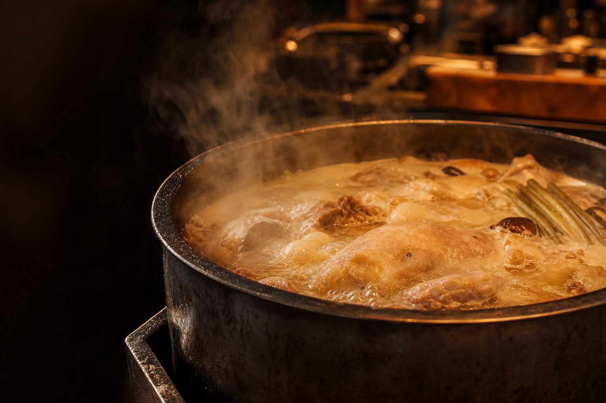
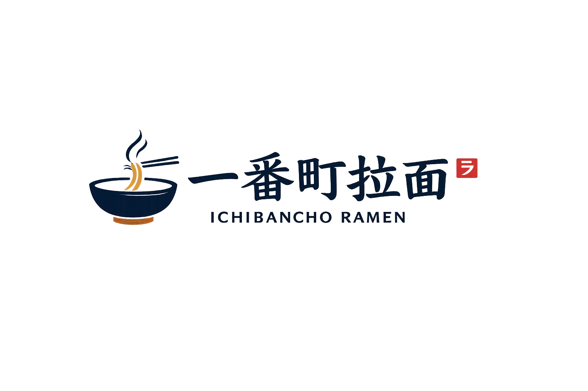
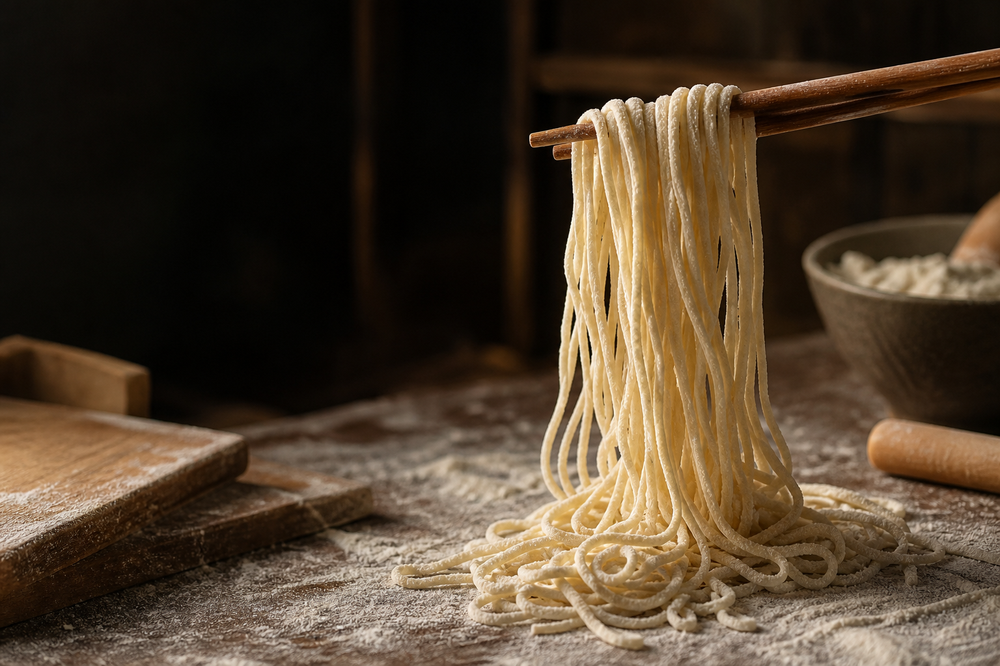
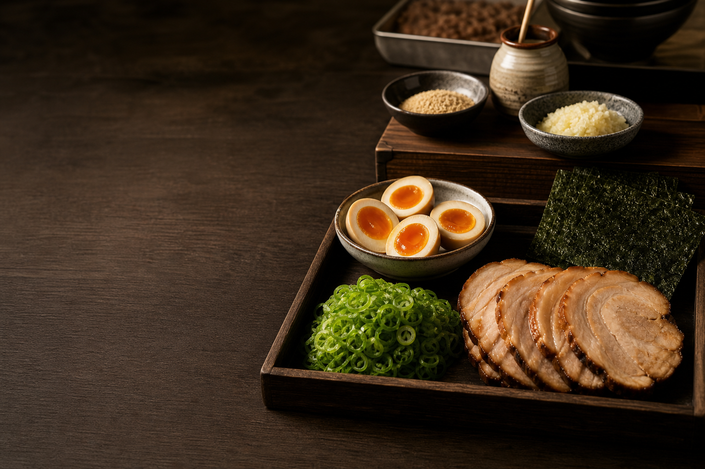
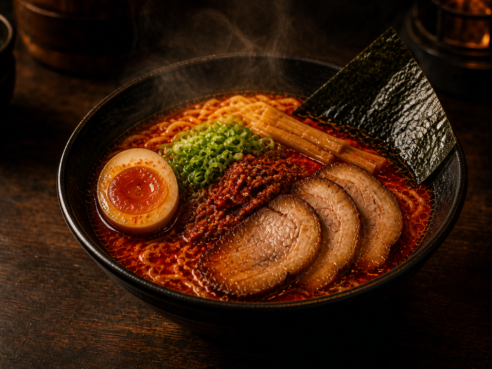
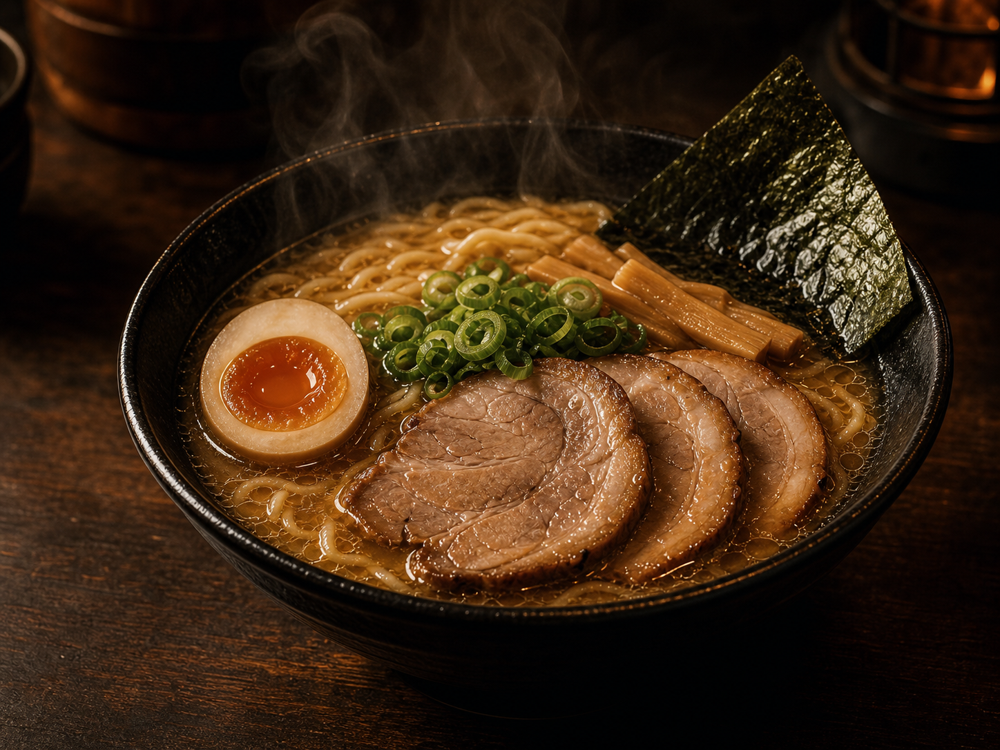
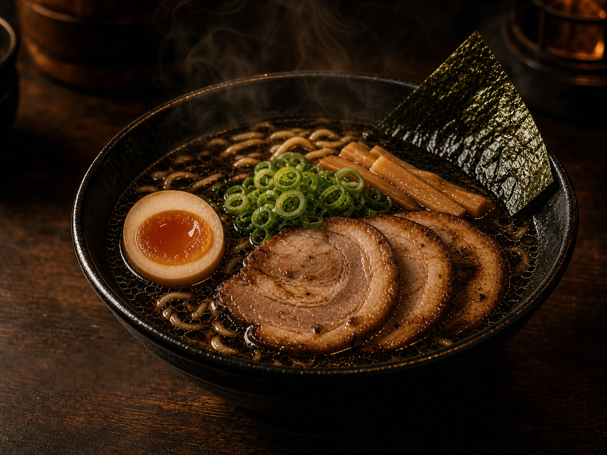
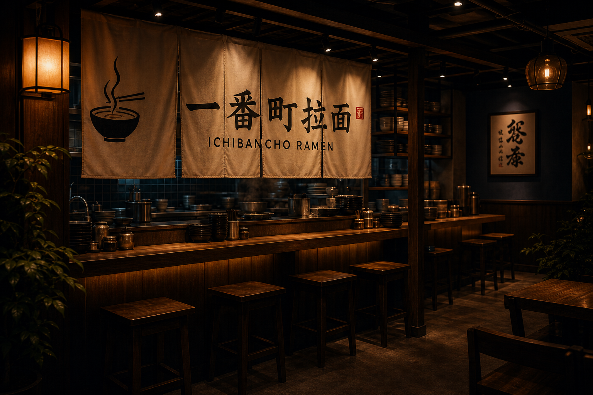

现熬汤底
每日分锅熬制，长时间慢火炖煮，呈现浓厚与层次感。


每日分锅熬制，长时间慢火炖煮，呈现浓厚与层次感。

根据汤底调整面条粗细，让每一口都挂住汤汁。

精选优质食材，用心处理，温度与本味都刚好。






一番町拉面，诞生于对一碗好拉面的执着。我们相信，拉面不只是填饱肚子，更是一种在日常中给自己力量的温暖。
从汤头熬制到一碗端上来，每一步我们都用心，只为让你满意地吃完这一碗面。
杭州市拱墅区潮鸣路 16 号
（演示用地址，靠近潮鸣地铁站）
0571-8888 2026